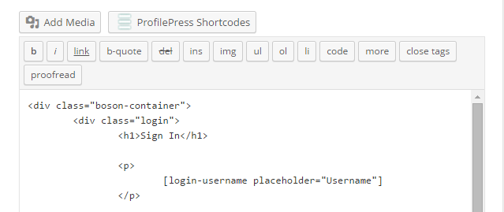
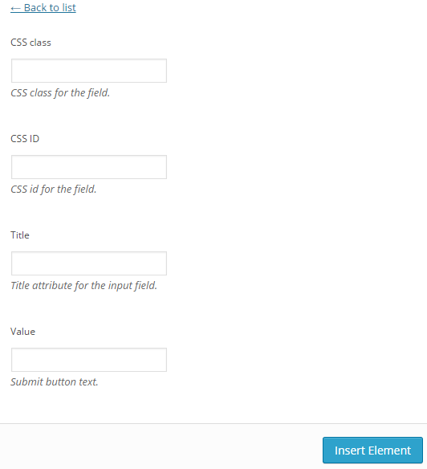

There are quite a number of shortcodes provided by ProfilePress to accomplish the task of building custom user account forms in WordPress. As a result, it will take time and effort to know them of the top of your head.
To quickly access the documentation off various ProfilePress shortcodes, click the ProfilePress Shortcodes button located at the top-right corner of the settings pages.

The documentation will slide in and occupy a section of the screen.

Clicking on the same button will conversely slideout / hide the documentation.
ProfilePress also include an an interactive and intuitive form builder for creating its various shortcodes.
Clicking the ProfilePress shortcodes button located above the page design textarea reveals a list of the shortcodes.


Clicking on any of the shortcode reveals a form for populating the attributes of the selected shortcode.
